Clipping
In the last few chapters, we developed equations and algorithms to transform a 3D definition of a scene into 2D shapes we can draw on the canvas; we developed a scene structure that lets us define 3D models and place instances of those models in the scene; and we developed an algorithm that lets us render the scene from any point of view.
However, doing this exposes one of the limitations we’ve been working with: the perspective projection equations only work as expected for points that are in front of the camera. Since we can now move and rotate the camera around the scene, this poses a problem.
In this chapter, we’ll develop the techniques necessary to lift this limitation: we’ll explore how to identify points, triangles, and entire objects that are behind the camera and develop techniques to deal with them.
An Overview of the Clipping Process
Back in Chapter 9 (Perspective Projection), we arrived at the following equations:
\[P\, '_x = {P_x \cdot d \over P_z}\]
\[P\, '_y = {P_y \cdot d \over P_z}\]
The division by \(P_z\) is problematic; it can cause a division by zero. Moreover, points behind the camera have negative \(Z\) values, which we currently can’t handle properly. Even points in front of the camera but very close to it will cause trouble in the form of severely distorted objects.
To avoid these problematic cases, we’ll choose not to render anything behind the projection plane \(Z = d\). This clipping plane lets us classify any point as being inside or outside of the clipping volume—that is, the subset of space that is actually visible from the camera. In this case, the clipping volume is “whatever is in front of \(Z = d\).” We’ll only render the parts of the scene that are inside the clipping volume.
The Clipping Volume
Using a single clipping plane to make sure no objects behind the camera are rendered will produce correct results, but it’s not entirely efficient. Some objects may be in front of the camera but still not visible; for example, the projection of an object near the projection plane but far, far to the right will be projected outside of the viewport and therefore won’t be visible, as shown in Figure 11-1.
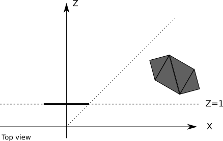
Any computational resources we use to project such an object, plus all the per-triangle and per-vertex computations done to render it, would be wasted. It would be more efficient to ignore these objects altogether.
To do this, we can define additional planes to clip the scene to exactly what should be visible on the viewport; these planes are defined by the camera and each of the four sides of the viewport (Figure 11-2).
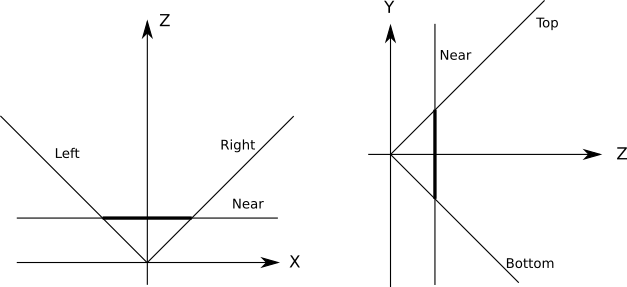
Each of the clipping planes splits space in two parts we call half-spaces. The “inside” half-space is everything that’s in front of the plane; the “outside” half-space is everything that’s behind it. The “inside” of the clipping volume we’re defining is the intersection of the “inside” half-spaces defined by each clipping plane. In this case, the clipping volume looks like an infinitely tall pyramid with the top chopped off.
This means that to clip the scene against a clipping volume, we just need to clip it in succession against each of the planes that define the clipping volume. Whatever geometry remains inside after clipping against one plane is then clipped against the remaining planes. After the scene has been clipped against all the planes, the geometry that remains is the result of clipping the scene against the clipping volume.
Next we’ll take a look at how to clip the scene against each clipping plane.
Clipping the Scene Against a Plane
Consider a scene with multiple objects, each made of four triangles (Figure 11-3).
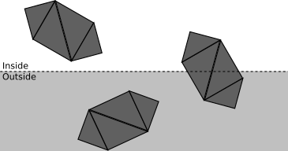
The fewer operations we execute, the faster our renderer will be. We will clip the scene against a clipping plane as a sequence of stages. Each stage will attempt to classify as much geometry as possible as either accepted or discarded, depending on whether it’s inside or outside the half-space defined by the clipping plane (that is, the clipping volume of this plane). Whatever geometry can’t be classified moves on to the next stage, which will take a more detailed look at it.
The first stage attempts to classify entire objects at once. If an object is completely inside the clipping volume, it’s accepted (green in Figure 11-4); if it’s completely outside, it’s discarded (red in Figure 11-4).
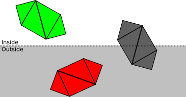
If an object can’t be fully accepted or discarded, we move on to the next stage and classify each of its triangles independently. If a triangle is completely inside the clipping volume, it’s accepted; if it’s completely outside, it’s discarded (see Figure 11-5).
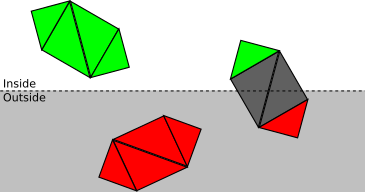
Finally, for each triangle that isn’t either accepted or discarded, we need to clip the triangle itself. The original triangle is removed, and either one or two new triangles are added to cover the part of the triangle that is inside the clipping volume (see Figure 11-6).
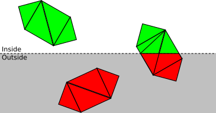
Now that we have a clear conceptual understanding of how clipping works, we’ll develop the math and algorithms to create a working implementation.
Defining the Clipping Planes
Let’s start with the equation of the projection plane \(Z = d\), which we’ll use as a clipping plane. This equation is simple to visualize, but it’s not in the most convenient or general form for our purposes.
The general equation for a 3D plane is \(Ax + By + Cz + D = 0\), meaning a point \(P = (x, y, z)\) will satisfy that equation if and only if \(P\) is on the plane. If we group the coefficients \((A, B, C)\) in a vector \(\vec{N}\), we can rewrite the equation as \(\langle \vec{N}, P \rangle + D = 0\).
Note that if \(\langle \vec{N}, P \rangle + D = 0\), then \(k\langle \vec{N}, P \rangle + kD = 0\) for any value of \(k\). In particular, we can choose \(k = {1 / |\vec{N}|}\), multiply the original equation, and get a new equation \(\langle \vec{N}\, ', P \rangle + D\, ' = 0\) where \(\vec{N}\, '\) is a unit vector. So any given plane can be represented by an equation \(\langle \vec{N}, P \rangle + D = 0\), where \(\vec{N}\) is a unit vector and \(D\) is a real number.
This is a very convenient formulation: \(\vec{N}\) happens to be the normal of the plane and \(-D\) is the signed distance from the origin to the plane. In fact, for any point \(P\), \(\langle \vec{N}, P \rangle + D\) is the signed distance from the plane to \(P\) ; \(distance = 0\) is just the special case where \(P\) is contained in the plane.
If \(\vec{N}\) is the normal of a plane, so is \(\vec{-N}\), so we choose \(\vec{N}\) such that it points to “inside” the clipping volume. For the plane \(Z = d\), we choose the normal \((0, 0, 1)\), which points “forward” with respect to the camera. Since the point \((0, 0, d)\) is contained in the plane, it must satisfy the plane equation, and we can solve for \(D\):
\[\langle \vec{N}, P \rangle + D = \langle (0, 0, 1), (0, 0, d) \rangle + D = d + D = 0\]
and from this we immediately get \(D = -d\).
We could have gotten \(D = -d\) directly from the original plane equation \(Z = d\) by rewriting it as \(Z - d = 0\). However, we can apply this general method to derive the equations of the rest of the clipping planes.
We know all these additional planes have \(D = 0\) (because they all go through the origin), so all we need to do is determine their normals. To make the math simple, we’ll choose a \(90^\circ\) field of view (FOV), meaning the planes are at \(45^\circ\).
Consider the left clipping plane. The direction of its normal is \((1, 0, 1)\) (that is, \(45^\circ\) right and forward). The length of that vector is \(\sqrt{2}\), so if we normalize it we get \(({1 \over \sqrt{2}}, 0, {1 \over \sqrt{2}})\). Therefore the equation of the left clipping plane is
\[\langle N, P \rangle + D = \langle ({1 \over \sqrt{2}}, 0, {1 \over \sqrt{2}}), P \rangle = 0\]
Similarly, the normals for the right, bottom, and top clipping planes are \(({-1 \over \sqrt{2}}, 0, {1 \over \sqrt{2}})\), \((0, {1 \over \sqrt{2}}, {1 \over \sqrt{2}})\), and \((0, {-1 \over \sqrt{2}}, {1 \over \sqrt{2}})\) respectively. Computing the clipping planes for any arbitrary FOV would involve just a little bit of trigonometry.
In summary, our clipping volume is defined by the following five planes:
\[(near) \langle (0, 0, 1), P \rangle - d = 0\] \[(left) \langle ({1 \over \sqrt{2}}, 0, {1 \over \sqrt{2}}), P \rangle = 0\] \[(right) \langle ({-1 \over \sqrt{2}}, 0, {1 \over \sqrt{2}}), P \rangle = 0\] \[(bottom) \langle (0, {1 \over \sqrt{2}}, {1 \over \sqrt{2}}), P \rangle = 0\] \[(top) \langle (0, {-1 \over \sqrt{2}}, {1 \over \sqrt{2}}), P \rangle = 0\]
Let’s now take a detailed look at how to clip geometry against a plane.
Clipping Whole Objects
Suppose we put each model inside the smallest sphere that can contain it; we call that sphere the bounding sphere of the object. Computing this sphere is surprisingly more difficult than it seems, and it falls outside the scope of this book. But a rough approximation can be obtained by first computing the center of the sphere by averaging the coordinates of all the vertices in the model, and then defining the radius to be the distance from the center to the vertex that it’s farthest away from.
In any case, let’s assume we know the center \(C\) and the radius \(r\) of a sphere that completely contains each model. Figure 11-7 shows a scene with a few objects and their bounding spheres.
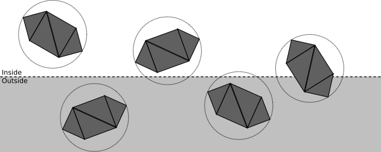
We can categorize the spatial relationship between this sphere and a plane as follows:
- The sphere is completely in front of the plane.
In this case, the entire object is accepted; no further clipping is necessary against this plane (but it may still be clipped by a different plane). See Figure 11-8 for an example.
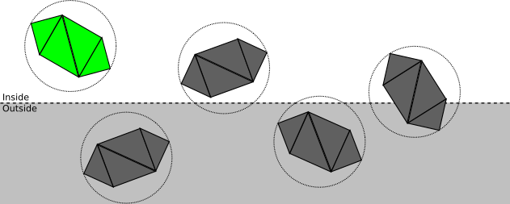
- The sphere is completely behind the plane.
In this case, the entire object is discarded; no further clipping is necessary (no matter what the other planes are, no part of the object will ever be inside the clipping volume). See Figure 11-9 for an example.
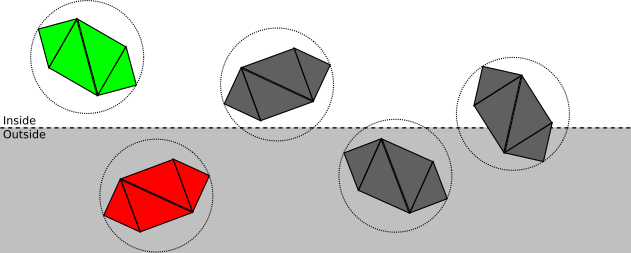
- The plane intersects the sphere.
This doesn’t give us enough information to know whether any part of the object is inside the clipping volume; it may be completely inside, completely outside, or partially inside. It is necessary to proceed to the next step and clip the model triangle by triangle. See Figure 11-10 for an example.
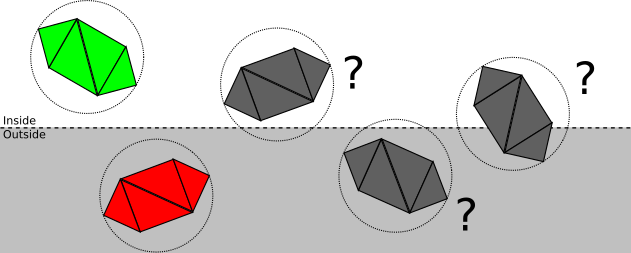
How does this categorization actually work? The way we’ve chosen to express the clipping planes is such that plugging any point into the plane equation gives us the signed distance from the point to the plane; in particular, we can compute the signed distance \(d\) from the center of the bounding sphere to the plane. So if \(d > r\), the sphere is in front of the plane; if \(d < -r\), the sphere is behind the plane; otherwise \(|d| < r\), which means the plane intersects the sphere. Figure 11-11 illustrates all three cases.
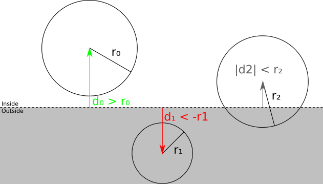
Clipping Triangles
If the sphere–plane test isn’t enough to determine whether an object is fully in front or fully behind the clipping plane, we have to clip each triangle against it.
We can classify each vertex of the triangle against the clipping plane by looking at its signed distance to the plane. If the distance is zero or positive, the vertex is in front of the clipping plane; otherwise, it’s behind. Figure 11-12 illustrates this idea.
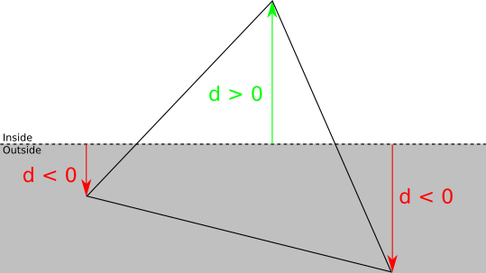
For each triangle, there are four possible classifications:
- Three vertices in front.
In this case, the whole triangle is in front of the clipping plane, so we accept it and no further clipping against this plane is needed.
- Three vertices behind.
In this case, the whole triangle is behind the clipping plane, so we discard it and no further clipping is necessary at all.
- One vertex in front.
Let \(A\) be the vertex of the triangle \(ABC\) that is in front of the plane. In this case, we discard \(ABC\), and add a new triangle \(AB\, 'C\, '\), where \(B\, '\) and \(C\, '\) are the intersections of \(AB\) and \(AC\) with the clipping plane (Figure 11-13).
- Two vertices in front.
Let \(A\) and \(B\) be the vertices of the triangle \(ABC\) that are in front of the plane. In this case, we discard ABC and add two new triangles: \(ABA\, '\) and \(A\, 'BB\, '\), where \(A\, '\) and \(B\, '\) are the intersections of \(AC\) and \(BC\) with the clipping plane (Figure 11-14).
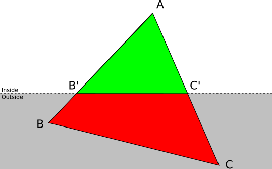
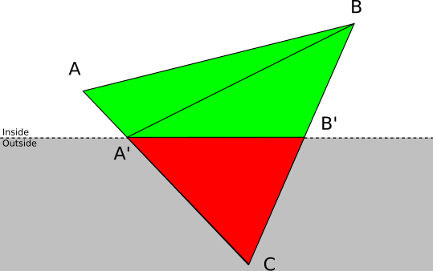
Segment-Plane Intersection
To clip triangles as discussed above, we need to compute the intersection of the sides of the triangle with the clipping plane.
We have a clipping plane given by the equation \(\langle N, P \rangle + D = 0\). The triangle side \(AB\) can be expressed with a parametric equation as \(P = A + t(B - A)\) for \(0 \le t \le 1\). To compute the value of the parameter \(t\) where the intersection occurs, we replace \(P\) in the plane equation with the parametric equation of the segment:
\[\langle N, P \rangle + D = 0\] \[P = A + t(B - A)\] \[\implies {\langle N, A + t(B - A) \rangle + D = 0}\]
Using the linear properties of the dot product:
\[\langle N, A \rangle + t\langle N, B - A \rangle + D = 0\]
Solving for \(t\):
\[t = {-D - \langle N, A \rangle \over \langle N, B - A \rangle}\]
We know a solution always exists because we know \(AB\) intersects the plane; mathematically, \(\langle N, B - A \rangle\) can’t be zero because that would imply that the segment and the normal are perpendicular, which in turn would imply that the segment and the plane don’t intersect.
Having computed \(t\), the intersection \(Q\) is simply
\[Q = A + t(B - A)\]
Note that if the original vertices carry additional attributes (for example, the \(h\) intensity value we were using in Chapter 7 (Filled Triangles)), we need to compute the values of these attributes for the new vertices.
In the equation above, \(t\) is the fraction of the segment \(AB\) where the intersection occurs. Let \(\alpha_A\) and \(\alpha_B\) be the values of some attribute \(\alpha\) at the points \(A\) and \(B\); if we assume the attribute varies linearly across \(AB\), then \(\alpha_Q\) can be computed as
\[\alpha_Q = \alpha_A + t(\alpha_B - \alpha_A)\]
We now have all the algorithms and equations to implement our clipping pipeline.
Clipping Pseudocode
Let’s write some high-level pseudocode for the clipping pipeline. We’ll follow the top-down approach we developed before.
To clip a scene, we clip each of its instances (Listing 11-1).
ClipScene(scene, planes) {
clipped_instances = []
for I in scene.instances {
clipped_instance = ClipInstance(I, planes)
if clipped_instance != NULL {
clipped_instances.append(clipped_instance)
}
}
clipped_scene = Copy(scene)
clipped_scene.instances = clipped_instances
return clipped_scene
}To clip an instance, we either accept it, reject it, or clip each of its triangles, depending on its bounding sphere (Listing 11-2).
ClipInstance(instance, planes) {
for plane in planes {
instance = ClipInstanceAgainstPlane(instance, plane)
if instance == NULL {
return NULL
}
}
return instance
}
ClipInstanceAgainstPlane(instance, plane) {
d = SignedDistance(plane, instance.bounding_sphere.center)
r = instance.bounding_sphere.radius
if d > r {
return instance
} else if d < -r {
return NULL
} else {
clipped_instance = Copy(instance)
clipped_instance.triangles =
ClipTrianglesAgainstPlane(instance.triangles, plane)
return clipped_instance
}
}Finally, to clip a triangle, we either accept it, reject it, or decompose it into up to two triangles, depending on how many of its vertices are in front of the clipping plane (Listing 11-3).
ClipTrianglesAgainstPlane(triangles, plane) {
clipped_triangles = []
for T in triangles {
clipped_triangles.append(ClipTriangle(T, plane))
}
return clipped_triangles
}
ClipTriangle(triangle, plane) {
d0 = SignedDistance(plane, triangle.v0)
d1 = SignedDistance(plane, triangle.v1)
d2 = SignedDistance(plane, triangle.v2)
if {d0, d1, d2} are all positive {
return [triangle]
} else if {d0, d1, d2} are all negative {
return []
} else if only one of {d0, d1, d2} is positive {
let A be the vertex with a positive distance
compute B' = Intersection(AB, plane)
compute C' = Intersection(AC, plane)
return [Triangle(A, B', C')]
} else /* only one of {d0, d1, d2} is negative */ {
let C be the vertex with a negative distance
compute A' = Intersection(AC, plane)
compute B' = Intersection(BC, plane)
return [Triangle(A, B, A'), Triangle(A', B, B')]
}
}The helper function SignedDistance just plugs the coordinates of a point into the equation of a plane (Listing 11-4).
SignedDistance(plane, vertex) {
normal = plane.normal
return (vertex.x * normal.x)
+ (vertex.y * normal.y)
+ (vertex.z * normal.z)
+ plane.D
}Clipping in the Rendering Pipeline
The order of the chapters in the book is not the order of operations in the rendering pipeline; as explained in the introduction, the chapters are ordered in such a way that visible progress is reached as quickly as possible.
Clipping is a 3D operation; it takes 3D objects in the scene and generates a new set of 3D objects in the scene or, more precisely, it computes the intersection of the scene and the clipping volume. For this reason, clipping must happen after objects have been placed in the scene (that is, using the vertices after the model and camera transforms) but before perspective projection.
The techniques presented in this chapter work reliably, but are very generic. The more prior knowledge you have about your scene, the more efficient your clipping can be. For example, many games pre-process their levels by adding visibility information to them; if you can divide a scene into “rooms,” you can make a table listing what rooms are visible from any given room. When rendering the scene later, you just need to figure out what room the camera is in, and you can safely ignore all the rooms marked as “non-visible” from there, saving considerable resources during rendering. The trade-off is, of course, more pre-processing time and a more rigid scene. If you’re interested in this topic, read about BSP partitioning and portal systems.
Summary
In this chapter, we finally lifted one of the main limitations caused by the perspective projection equation. We’ve overcome the limitation that only vertices in front of the camera can be meaningfully projected. In order to do this, we came up with a precise definition of what “being in front of the camera” means: whatever is inside a clipping volume we define with five planes.
Then we developed the equations and algorithms to compute the geometrical intersection between the scene and the clipping volume. As a consequence, we can take an entire scene and remove everything that can’t possibly be projected onto the viewport. This not only avoids the cases that can’t be handled by the perspective projection equations, it also saves computation resources by removing geometry that would be projected outside of the viewport.
However, after clipping a scene, we might still end up with geometry that could be visible in the final canvas, but which will not, most likely because there’s something else in front of it! We’ll find ways to deal with this in the next chapter.